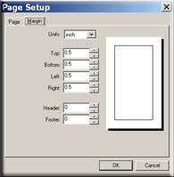

In the same dialog box as "Page Setup," click the "Margins" tab located next to the "Page" tab. This will now allow you to change the margins for this particular document.

The drop down box changes the a unit of measure, e.g., inches, centimeters, etc. Below the unit of measure drop down list is a collection of bexes marked with their prosepective magin. Each margin, top, bottom, right and left can be changed independently of the others.
The bottom boxes, marked Header and Footer, change the margin of the header and footer away from the main text of the document, respectively.
Once all settings are finished being set, click "OK."